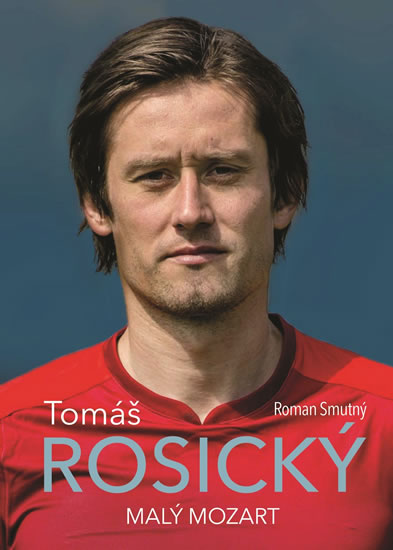

Svoji kariéru zahájil v roce 1999, kdy jako odchovanec začal nastupovat za „áčko“ ve Spartě Praha. Debutoval v květnu v zápase proti Jablonci jako střídající hráč. Za Spartu odehrál 65 zápasů, ten poslední 26. listopadu 2000 proti Příbrami. Odtud přestoupil v lednu 2001 do německé Borussie Dortmund a přepsal tak historii, neboť nikdy dříve nebyla českému klubu za přestup hráče vyplacena částka přesahující 504 milionů korun. S BVB získal v roce 2002 německý titul. Později se ale klub ocitl ve finančních nesnázích, stal se z něj spíše průměrný německý tým, což neprospívalo Rosického nadějné kariéře. Každé přestupové období se spekulovalo o přestupu, ke kterému však došlo až v roce 2006, kdy 22. května podepsal Rosický čtyřletou smlouvu s Arsenalem. První gól v anglické lize vstřelil 11. února 2007 v domácím zápase proti Wiganu. Od 26. ledna 2008 byl dlouhodobě mimo hru, kvůli zranění podkolenní šlachy, které si přivodil v zápase proti Fulhamu, ve kterém vstřelil gól. Poté ještě nastoupil v zápase FA Cupu proti Newcastlu, ovšem po 9 minutách musel být kvůli bolestem střídán. Zpočátku to vypadalo na banální zranění, ale nakonec se velice zkomplikovalo a Rosický nejenže nestihl EURO 2008 v Rakousku a Švýcarsku, ale hrozil mu i konec kariéry. V březnu 2009 to vypadalo, že se vrátí na hřiště, ale kvůli problémům s třísly už v sezóně 2008/2009 nenastoupil. K prvnímu soutěžnímu zápasu po zranění nastoupil až v září 2009.
6. dubna 2013 dvěma góly rozhodl utkání Premier League s domácím West Bromwichem (2:1 pro Arsenal). V závěru ročníku už střádal starty v sestavě Arsenalu. 19. května 2013 v posledním ligovém kole Premier League 2012/13 nastoupil v základní sestavě v zápase proti Newcastle United, Arsenal zvítězil 1:0, pojistil si se 73 body čtvrtou příčku v konečné tabulce a kvalifikoval se do předkola Ligy mistrů 2013/14.
13. ledna 2014 v ligovém zápase s Aston Villou mu protihráč Gabriel Agbonlahor zlomil loktem v souboji nos, Rosický musel podstoupit chirurgický zákrok. 22. února 2014 jednou skóroval v Premier League proti Sunderlandu (výhra 4:1). V sezoně 2013/14 vyhrál svou první trofej v Arsenalu - FA Cup.
Následující sezónu 2014/15 nebyl příliš hráčsky vytížen, spekulovalo se o jeho přestupu. V lednu 2015 odmítl nabídku řeckého týmu Olympiakos Pireus. Na sezónu 2016/17 mu Arsenal nenabídl novou smlouvu a hráč si hledal nové působiště.
Dne 30. srpna 2016 podepsal dvouletou smlouvu s pražským fotbalovým klubem AC Sparta Praha. V sezoně 2016/17 však nastoupil k jedinému utkání doma proti Mladé Boleslavi, na hřiště přišel za velkého aplausu letenských fanoušků v 72 minutě. Zbytek sezóny léčil zranění Achillovy šlachy. Svůj první gól po návratu do klubu AC Sparta Praha dal 10. září 2017, kdy gólově otevřel utkání ve 14. minutě proti klubu MFK Karviná.
Dne 20. prosince 2017 oznámil ukončení profesionální hráčské fotbalové kariéry.
| Roky | Kluby | Zápasy | Góly |
|---|---|---|---|
| 1998-2001 | AC Sparta Praha | 41 | 8 |
| 2001-2006 | Borussia Dortmund | 149 | 20 |
| 2006-2016 | Arsenal FC | 170 | 19 |
| 2016-2017 | AC Sparta Praha | 12 | 1 |
V A-mužstvu ČR debutoval 23. 2. 2000 v přátelském zápase proti Irsku (prohra 2:3).
Byl členem českého reprezentačního týmu, který se na EURU 2004 dostal až do semifinále, kde padl s Řeckem.
Důležitý reprezentační gól vstřelil 16. 11. 2005 při odvetě baráže o účast na MS 2006, jenž rozhodl o vítězství 1:0 nad Norskem a postupu na finálový turnaj. V úvodním utkání šampionátu proti Spojeným státům přispěl Rosický dvěma brankami k vítězství 3:0, pak však český tým dvakrát prohrál a nepostoupil ze základní skupiny.
Od roku 2006 do roku 2008 byl kapitánem české reprezentace, když po neúspěchu reprezentace na MS 2006 nahradil na pozici kapitána Pavla Nedvěda, který svoje působení v reprezentaci ukončil. Kvůli zranění se poté v roce 2008 stal kapitánem Tomáš Ujfaluši, jenž ale v témže roce skončil v reprezentaci. Proto ho v roli kapitána nahradil brankář Petr Čech, který ve funkci kapitána zastupoval Tomáše Rosického, když nemohl hrát. Zranil se i na EURU 2012, kde o poločase utkání proti Řecku (výhra ČR 2:1) musel odstoupit. ČR postoupila do čtvrtfinále turnaje, kde ji vyřadilo Portugalsko výsledkem 1:0.
6. února 2013 nastoupil v přátelském utkání v Manise proti domácímu Turecku, Česká republika zvítězila 2:0.
Kapitánskou pásku si nasadil i při EURU 2016 ve Francii, kde se však opět v průběhu turnaje zranil, již ve druhém zápase proti Chorvatsku (remíza 2:2), když si natrhl stehenní sval.
| Roky | Kluby | Zápasy | Góly |
|---|---|---|---|
| 2000-2016 | Česko | 105 | 23 |
Jeho partnerkou je Radka Kocurová, druhá vicemiss České republiky 2002, modelka a moderátorka počasí na TV Nova. V roce 2011 spolu čekali dítě, ale Kocurová na konci pátého měsíce těhotenství potratila.Na podruhé se však vše podařilo a 25. června 2013 se jim narodil syn Tomáš.V roce 2014 se s Kocurovou oženil.
V roce 2010 se Rosický stal čestným občanem obce Šestajovice u Prahy.